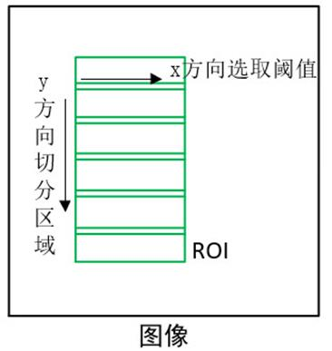
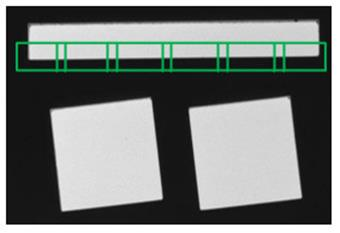

|
类型 |
形状测量 |
|
描述 |
生成用于直线测量的旋转矩形区域，沿y方向切分区域，子区域沿x方向选取阈值，默认使用相对阈值模式  |
|
语法 |
ZV_MrGenLine(mr,cx,cy,width,height,angle[,interp=1,subNum=0,subWidth=0])
参数： mr：ZVOBJECT类型，直线测量器 cx：旋转矩形中心x坐标 cy：旋转矩形中心y坐标 width：旋转矩形宽度，单位像素，范围[3,2001] height：旋转矩形高度，单位像素，范围[3,32766] angle：旋转矩形角度，由图像坐标系确定，单位为度数 interp：插值算法，取值0-最近邻插值，1-双线性插值，2-双三次插值 subNum：子区域数量，表示的是旋转矩形被划分成的子区域个数，大于2，否则取默认值8 subWidth：子区域宽度，单位像素 |
|
适用控制器 |
支持ZV功能或者5系列以上的控制器 |
|
例子 |
 ZVOBJECT mr ZV_MrGenLine(mr,120,100,80,60,90,0,5,5) '生成直线测量的测量器 |